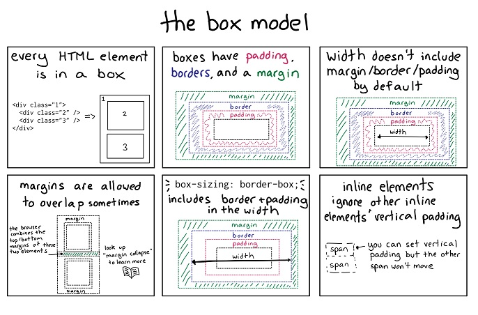
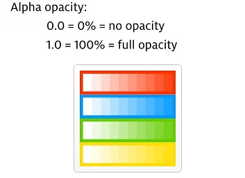
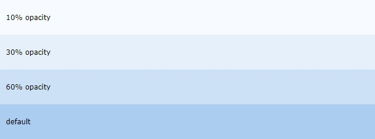
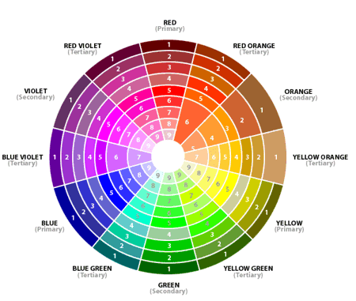
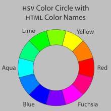

The CSS box model is essentially a box that wraps around every HTML element. It consists of: margins, borders, padding, and the actual content.
Explanation of the different parts:
In CSS, the term "box model" is used when talking about design and layout.
The opacity property specifies the opacity/transparency of an element. It can take a value from 0.0 - 1.0. The lower value, the more transparent:
When using the opacity property to add transparency to the background of an element, all of its child elements inherit the same transparency. This can make the text inside a fully transparent element hard to read:
If you do not want to apply opacity to child elements, like in our example above, use RGBA color values. The following example sets the opacity for the background color and not the text:
You already learned from CSS Colors Chapter, that you can use RGB as a color value. In addition to RGB, you can use an RGB color value with an alpha channel (RGBA) - which specifies the opacity for a color. An RGBA color value is specified with: rgba(red, green, blue, alpha). The alpha parameter is a number between 0.0 (fully transparent) and 1.0 (fully opaque).
The basic colour wheel is made up of three primary colours (red, yellow and blue), three secondary colours (orange, green and violet) and six tertiary colours (red-orange, yellow-orange, yellow-green, blue-green, blue-violet and red-violet).
The HSL and HSV color spaces are simple geometric transformations of the RGB cube into cylindrical form. The outer top circle of the HSV cylinder – or the outer middle circle of the HSL cylinder – can be thought of as a color wheel.
updating soon....
Thanks For Watching My Static Website